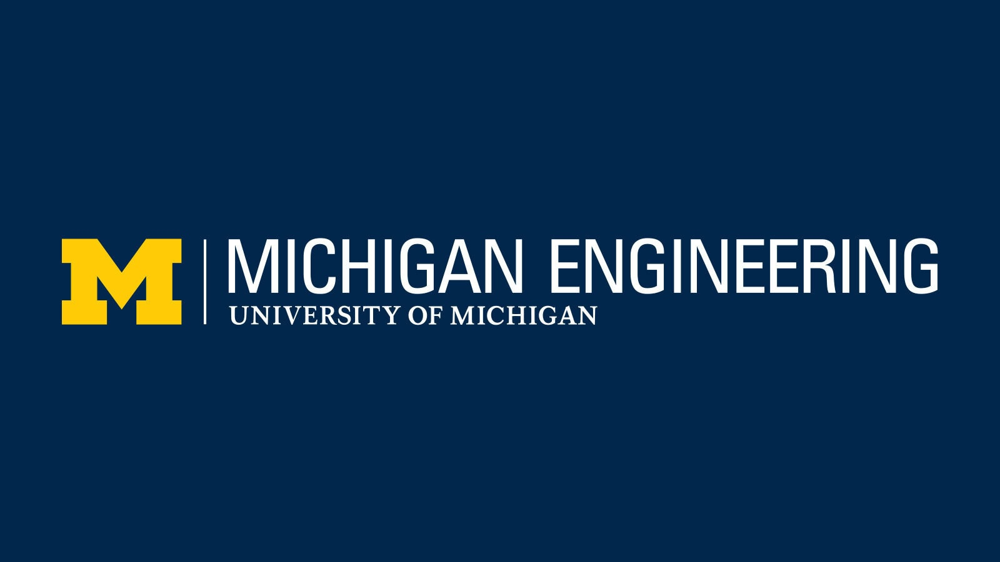

Across roles in systems modeling, academic analytics, and large-scale engineering, I’ve applied data and systems thinking to deliver measurable impact. At the University of Michigan, I’ve built simulations to optimize hospital CT workflows and automated Oracle-to-Tableau reporting pipelines that informed decisions for over 1,200 students. Earlier at Bharat Electronics, I coordinated production and logistics for 124,000+ voting machines in India’s national elections. Whether developing models, streamlining reporting, or driving operational improvements, I bring a blend of technical expertise and problem-solving focus to complex challenges.
Research Associate
Office of the Associate Dean for Undergraduate Education
University of Michigan, Ann Arbor, MI, USA

I designed and automated Tableau dashboards to track undergraduate program outcomes, enrollment patterns, and student engagement. By integrating Oracle databases with Tableau, Google Sheets, and SQL queries, I built automated reporting pipelines that reduced manual work and improved dashboard performance and reliability. I analyzed large-scale survey and enrollment datasets using Python, R, and Excel to identify trends, run statistical tests, create meaningful metrics, and communicate insights that supported policy updates and academic program evaluations affecting 5,000+ students. Alongside dashboard development, I performed data cleaning and validation, developed reproducible workflows, and documented processes to ensure long-term usability. I collaborated with faculty, advisors, and academic staff to understand their information needs, translated those needs into clear visualizations and data narratives, and presented findings in ways that were easy to interpret. This role strengthened my skills in data storytelling, cross-functional communication, and transforming raw educational data into actionable insights that improve the undergraduate learning experience.
Tools: Tableau, Python, R, SQL, Oracle Database, Microsoft Excel, Google Sheets, Qualtrics, SAP Business Objects, ProModel, SPSS, STATA, Streamlit, Git/GitHub


{kind=link}
{kind=link}
{kind=link}